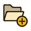
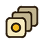
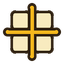

ГлоссарийТермины, которые встречаются в программе и документации.
| Термин | Значение |
|---|---|
| Body / Outline | Две роли пикселя: тело (заливка) и контур. У каждой свои цвета, вероятность и флажок активности. |
| Chance | Вероятность (0-100%), что пиксель или слой будет использован генератором. |
| AutoColor | Цвет пикселя подбирается из палитры автоматически. |
| Ячейка (cell) | Слой в конкретном кадре. Инструмент Move без выделения двигает всю ячейку. |
| Frame / кадр | Один момент анимации; максимум 120 кадров на документ; нумерация в интерфейсе с 1. |
| Tag / тег анимации | Именованный диапазон кадров (idle, walk). Становится клипом при экспорте в атлас. |
 Onion skin | Полупрозрачный показ соседних кадров (до 4 до и 4 после). |
| Inbetween | Автоматическая промежуточная поза между двумя кадрами. |
| Layer group | Плоская группа слоёв с общей видимостью и блокировкой. |
| Alpha mask | Слой, использующий альфа-канал другого слоя как маску, с возможной инверсией. |
| Blend mode | Режим наложения слоя: Normal, Multiply, Screen, Add. |
| Add-on | Режим генератора (Effects, Furniture, Character), который включается поверх Drawing флажком «Apply ... to Drawing». |
| Seed | Число, задающее случайность; тот же сид и настройки дают тот же результат. |
| Variation | Вариант настроек (например, профиль шума) или результат, созданный на основе выбранного спрайта. |
| Indexed | Документ, где пиксели привязаны к слотам палитры; смена палитры меняет всю анимацию. |
| Ramp | Ряд оттенков от тени к свету, построенный от базового цвета. |
| Dithering | Рисунок из пикселей двух цветов, имитирующий промежуточные тона. |
 Slice | Именованная прямоугольная область с pivot и 9-slice center. |
| Pivot | Опорная точка слайса относительно его границ. |
| 9-slice | Разбиение изображения на 9 частей: углы неизменны, центр растягивается. |
| Atlas | Лист спрайтов с описанием кадров и клипов (Unity, Godot, Phaser). |
| Tile Repeat | Режим, при котором рисунок «заворачивается» через края холста. |
| .sf | Формат проекта SpriteForge. |